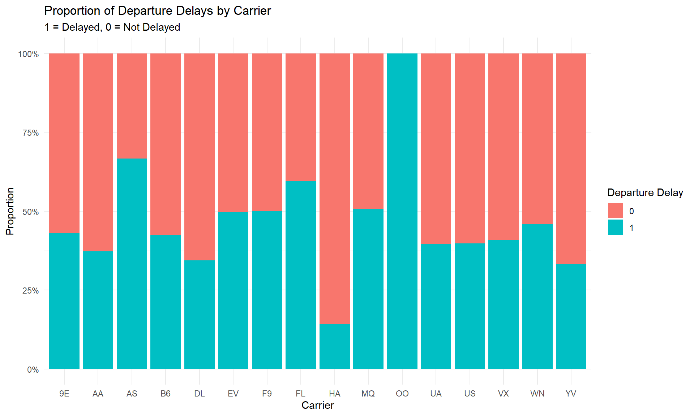

Chapter 4 Binomial Linear Regression
By Eliana Perea Barreto
4.1 Overview
Binomial regression is a type of generalized linear model used for a binary dependent variable (y), meaning a variable with two possible outcomes, often coded as 0 or 1. This model extends linear regression by applying a logistic function to estimate the probabilities of binary outcomes based on one or more predictor variables.
4.2 Algorithmic Framework
4.2.1 Data Nature
Binomial regression, commonly known as logistic regression, is typically employed when the response variable assumes a binary form. However, as outlined in the introduction of this investigation, the goal here is to assess the relation between flight arrival delays and carrier names. In the revised framework, the response variable, arr_delay has continuous values. Thus it becomes imperative to appropriately transform its values into a binary format.
In this new set up , a new variable arr_delay_binary is adopted as the response variable. This variable takes on the continuous values of arr_delay and assign 0 to delays lower or equal to 0 and 1 to delays greater than 1:
\[ \text{arr_delay_binary} \leq 0 \quad \text{ as "on-time" } = (0) \quad | \quad \text{arr_delay_binary > 0 } \quad \text{as delay} = (1) \]
Here’s a summary of the distribution of arr_delay_binary :
Code Preview
# Define lower and upper bounds for outliers
Q1 <- quantile(datos_flight$arr_delay, 0.25, na.rm = TRUE)
Q3 <- quantile(datos_flight$arr_delay, 0.75, na.rm = TRUE)
lower_bound <- Q1 - 1.5 * (Q3 - Q1)
upper_bound <- Q3 + 1.5 * (Q3 - Q1)
# Replace outliers and NA values by the mean of the column
mean_arr_delay <- mean(datos_flight$arr_delay, na.rm = TRUE)
datos_flight <- datos_flight %>%
mutate(arr_delay = ifelse(is.na(arr_delay) | arr_delay < lower_bound | arr_delay > upper_bound, mean_arr_delay, arr_delay))
# Second mutate: Convert dep_delay to a binary variable
datos_flight <- datos_flight %>%
mutate(arr_delay_binary = ifelse(arr_delay > 0, 1, 0))## Min. 1st Qu. Median Mean 3rd Qu. Max.
## 0.000 0.000 0.000 0.422 1.000 1.000As delineated in the summary of the variable, the conversion of continuous data into a Boolean format (0 or 1) was accomplished seamlessly. This transformation is underscored by a mean value of 0, a minimum value of 0, and a maximum value of 1, with the absence of any NA values. Consequently, we can proceed to investigate how this response variable is distributed across all carriers, with a particular focus on discerning the proportion of delayed (1) versus non-delayed (0) instances.

Notice that the carrier “OO” has a proportion of 100% delays. The reason behind this is that this carrier has only one entry in the dataset, which corresponds to 1. Such a circumstance prompts considerations regarding the distribution of data across carriers, especially in cases where data imbalances may influence the analysis. This concern is amplified if carriers with limited data entries, like “OO”, are considered next to carriers boasting larger datasets.
##
## 9E AA AS B6 DL EV F9 FL HA MQ OO UA US VX WN YV
## 276 504 3 818 747 787 8 52 7 401 1 844 299 71 176 6## Median of the counts: 226Upon examination of the counts and median of the distribution, it becomes evident that several carriers fall significantly below the median. Carriers AS, F9, HA, OO, VX, and YV each have fewer than 50 samples, a quantity that may be deemed limited, as it is approximately five times lower than the median. This data imbalance could lead to the Generalized Linear Model (GLM) giving excessive importance to the minority class, possibly undermining prediction accuracy or inferences. To tackle the problem of low statistical power for airlines with minimal samples, they’ll be grouped under the category “Other,” . This way we can improve the model’s statistical power without sacrificing meaningful comparisons.
Code Preview
# Convert the table to a dataframe for easier manipulation
carrier_counts_df <- as.data.frame(carrier_counts)
names(carrier_counts_df) <- c("carrier", "entries_count")
# Identify airlines with fewer than 50 entries
rare_airlines <- carrier_counts_df$carrier[carrier_counts_df$entries_count < 50]
datos_flight$carrier_grouped <- ifelse(datos_flight$carrier %in% rare_airlines, "Other", datos_flight$carrier)
# Create New dataset
columns_to_keep <- c("carrier_grouped","arr_delay", "arr_delay_binary")
binary_dataset <- datos_flight[, columns_to_keep]4.2.2 Regression Equation
The goal of this study is to investigate the probability that the response variable 𝑌 is 1 in regards to each carrier. Thus, this study is fundamentally a regression analysis based on probabilities, specifically focusing on the odds ratio. The odds ratio represents the likelihood of an event occurring relative to it not occurring.
\[ \text{Odds} = \frac{\text{Probability of event}}{\text{Probability of no event}} \]
The challenge of using odds as response variables in a linear model lies in their range from 0 to infinity, making them unable to naturally form a straight line relationship with predictors that range across all real numbers. To address this, a new strategy is proposed: predicting log-odds instead of odds. This transformation maps probabilities from the interval [0, 1] to the entire real line (−∞ to +∞). This allows the output to vary freely from (−∞ to +∞), which is essential for a linear relationship. Accordingly, the logistic regression model is expressed as follows:
\[ Logit(P(Y = 1|X))=ln(\frac{P}{1−PP})= β_0+β_1 \quad \cdot \quad (\text{carrier name}) \]
Here, \(log(\frac{P}{1-P})\) is the mathematical formula of the log-Odds which is used to calculate the probability of the event occurring. \(\beta_0\) is the intercept and \(\beta_1\) is the coefficients for the predictor variable x, carrier .
The elements of this equation, including the natural logarithmic probability and the coefficients (β0, β1), are automatically computed by implementing the GLM function with the family parameter set to binomial glm(..., family = "binomial"). Below the model is fitted to assess its accuracy.
binomial_model_eval <- glm(arr_delay_binary ~ carrier_grouped,
data = binary_dataset,
family = "binomial")Summary
##
## Call:
## glm(formula = arr_delay_binary ~ carrier_grouped, family = "binomial",
## data = binary_dataset)
##
## Coefficients:
## Estimate Std. Error z value Pr(>|z|)
## (Intercept) -0.27712 0.12154 -2.280 0.0226 *
## carrier_groupedAA -0.24218 0.15250 -1.588 0.1123
## carrier_groupedB6 -0.02841 0.14063 -0.202 0.8399
## carrier_groupedDL -0.36821 0.14389 -2.559 0.0105 *
## carrier_groupedEV 0.26950 0.14091 1.913 0.0558 .
## carrier_groupedFL 0.66659 0.30765 2.167 0.0303 *
## carrier_groupedMQ 0.30206 0.15732 1.920 0.0549 .
## carrier_groupedOther -0.12834 0.42596 -0.301 0.7632
## carrier_groupedUA -0.14615 0.14045 -1.041 0.2981
## carrier_groupedUS -0.13671 0.16950 -0.807 0.4199
## carrier_groupedVX -0.09325 0.27031 -0.345 0.7301
## carrier_groupedWN 0.11769 0.19402 0.607 0.5441
## ---
## Signif. codes: 0 '***' 0.001 '**' 0.01 '*' 0.05 '.' 0.1 ' ' 1
##
## (Dispersion parameter for binomial family taken to be 1)
##
## Null deviance: 6809.3 on 4999 degrees of freedom
## Residual deviance: 6744.6 on 4988 degrees of freedom
## AIC: 6768.6
##
## Number of Fisher Scoring iterations: 4For several carriers (AA, B6, UA, US, VX, WN, Other), the coefficients obtained do not exhibit statistical significance. The residual deviance, which stands at 6756.4 in contrast to the null deviance of 6816.7, suggests that while the model accounts for a portion of the variability in flight delays, it does not capture all of it. Moreover, the “Other” category, representing carriers with limited samples, does not demonstrate statistical significance (p-value: 0.4092).
I suspect that the variation in entry counts across carriers impacts the coefficient significance in this model. When one category has significantly more observations, it may dominate the model’s estimation, leading to biased estimates and inflated significance levels. Of more concern is the implication that the model has poor performance. However, without a comprehensive model evaluation, the true performance remains uncertain. Thus, we’ll assess the model’s effectiveness using evaluation metrics derived from a confusion matrix after the training and prediction process.
4.3 Training & Predicting Process
Before evaluating the model’s performance, it’s crucial to split the dataset into training and testing sets. Once the model is trained on the training set, we can assess its performance on the testing set to evaluate its ability to capture data patterns and make reliable predictions. To see how the model was fitted click on Model.
set.seed(123)
train_index <- sample(1:nrow(binary_dataset), 0.8 * nrow(binary_dataset))
train_data <- binary_dataset[train_index, ]
test_data <- binary_dataset[-train_index, ]Model
After fitting the logistic regression model, the predicted probabilities need to be converted into binary outcomes to compare them with the actual binary outcomes of arr_delay_binary.
# Predict on the testing set
predicted_probs <- predict(logit_model, newdata = test_data, type = "response")
predicted_classes <- ifelse(predicted_probs > 0.5, 1, 0)4.3.1 Model Evaluation
This evaluation is grounded in the implementation of the confusion matrix, which offers a comprehensive breakdown of the model’s predictions in comparison to the actual outcomes. This matrix serves as the foundation for calculating various evaluation metrics, including accuracy, precision, recall, specificity, and the F1 score. By utilizing these metrics, we anticipate gaining insights into both the strengths and weaknesses of the model.
## predicted_classes
## 0 1
## 0 526 47
## 1 381 46The confusion matrix breaks down predictions versus actual outcomes in binary classification scenarios, detailing counts for true positives (TP), true negatives (TN), false positives (FP), and false negatives (FN). TP represents correctly predicted delays (1), TN denotes correctly predicted non-delays (0). In our case, we have 526 TNs and 46 TPs. FP occurs when predicting a delay but the outcome is not, resulting in 47 instances, while FN arises when predicting no delay but experiencing a delay, with 381 occurrences.
These values (TN = 526, FP = 47, FN = 381, TP = 46) are now implemented to calculate the metrics.
The first metric, Accuracy, measures the proportion of correctly predicted outcomes out of the total number of predictions, providing an overall measure of correctness.
## Accuracy: 0.572In this case, an accuracy of 0.572 indicates that approximately 57.2% of the model’s predictions are correct. This suggests that the model is correct more often than not, but it still makes a significant number of errors.
Precision is the proportion of true positives out of all instances predicted as delays, indicating the model’s ability to avoid false positives.
## Precision: 0.4946237A precision of 0.495 means that roughly 49.5% of the flights predicted as delays are actually delayed. This indicates that the model has a moderate rate of false positives, predicting delays that don’t occur about half the time.
Recall, also known as sensitivity, is the proportion of true positives out of all actual delays.
## Recall: 0.1077283A recall of 0.108 indicates that approximately 10.8% of the actual delays are correctly identified by the model. This low recall suggests that the model misses a large number of actual delays, indicating poor sensitivity to the delayed flights.
Specificity is the proportion of true negatives out of all actual non-delays, focusing on the model’s ability to avoid false positives for non-delays.
## Specificity: 0.9179756With a specificity of 0.918, roughly 91.8% of the non-delay flights are correctly identified by the model. This high specificity indicates that the model is good at identifying flights that will not be delayed, minimizing false positives.
The F1 Score is the harmonic mean of precision and recall, providing a balance between these two metrics, especially useful when the classes are imbalanced.
## F1 Score: 0.1769231An F1 Score of 0.177 suggests a poor balance between precision and recall, with the model performing poorly in identifying actual delays (low recall) and having a moderate number of false positives (moderate precision). The low F1 score indicates overall suboptimal performance, especially in identifying delayed flights.
The analysis of the confusion matrix and derived metrics reveals notable findings regarding the model’s efficacy. While demonstrating a commendable ability to predict non-delayed flights, with a specificity of 91.8%, its performance in identifying actual delays is markedly deficient, as indicated by a low recall rate of 0.108. Despite achieving an overall accuracy of 57.2%, the model’s disproportionate precision and recall resulted in an F1 Score of 0.177, which highlights the model’s suboptimal capability in detecting delayed flights., exacerbated by the inherent class imbalance within the dataset, skewed towards non-delays. The model’s sub-optimal performance might also stem from short availability of features. In this instance, the model solely relied on the “carrier_grouped” variable for predicting flight delays, potentially neglecting other pertinent predictors.
The subsequent section will conduct a comprehensive evaluation of the model’s strengths and limitations to inform future refinement efforts.
4.4 Strengths and Limitations
4.4.1 Strengths
The GLM to binomial modeling technique presents several notable strengths, rendering it an appropriate choice for analyzing vast datasets such as flight data. Its simplicity and computational efficiency facilitate model implementation and interpretation. Moreover, its robustness to outliers, attributed to the flexibility of the log-odds, enhances its reliability compared to more sensitive models like Simple Linear Regression. Despite its limitations, evidenced by an accuracy of 57.2%, the model demonstrates reasonable performance despite the complexities found in the data.
4.4.2 Limitations
The GLM to binomial, while straightforward, may struggle to capture complex patterns due to its simplistic nature compared to more advanced techniques like decision trees or neural networks. Its assumption of a linear relationship between predictors and outcomes may limit its ability to model nonlinear relationships. This model might also face challenges in generalizing to unseen data as it seems to be very sensitivity to imbalances in sample sizes impacting the model’s predictive power. To improve performance, exploring alternative algorithms and incorporating additional features might be needed to enhance its robustness. In summary, while GLM to binomial explains some variability in flight delays, its predictive power may be constrained by the model’s simplicity and the exclusion of potentially relevant predictors.